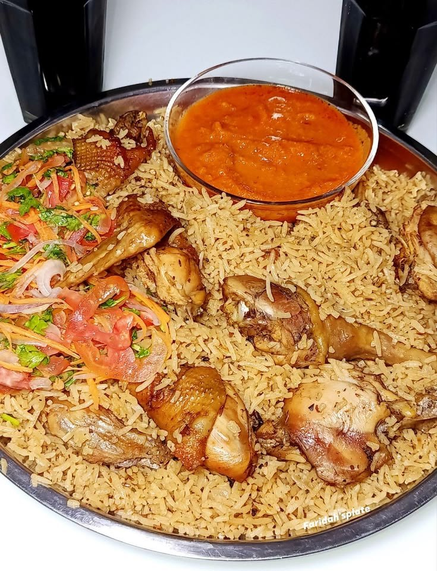
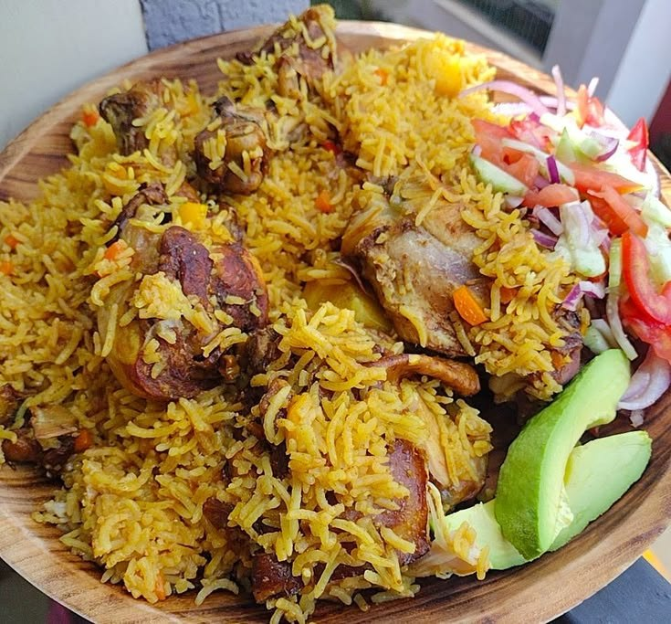
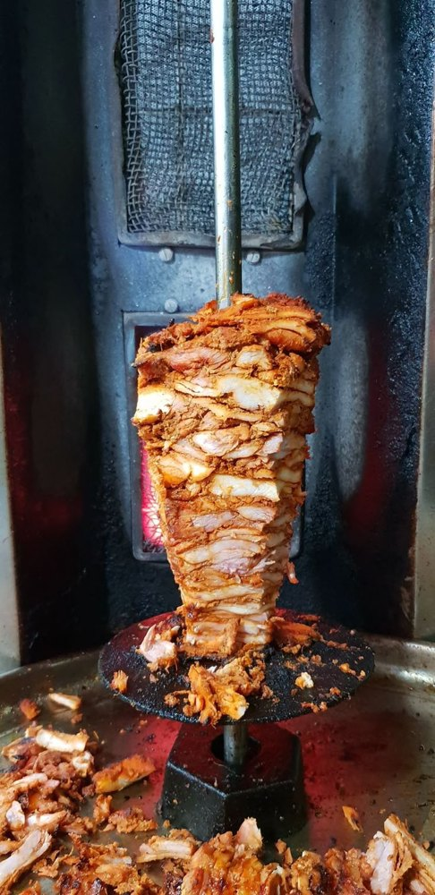
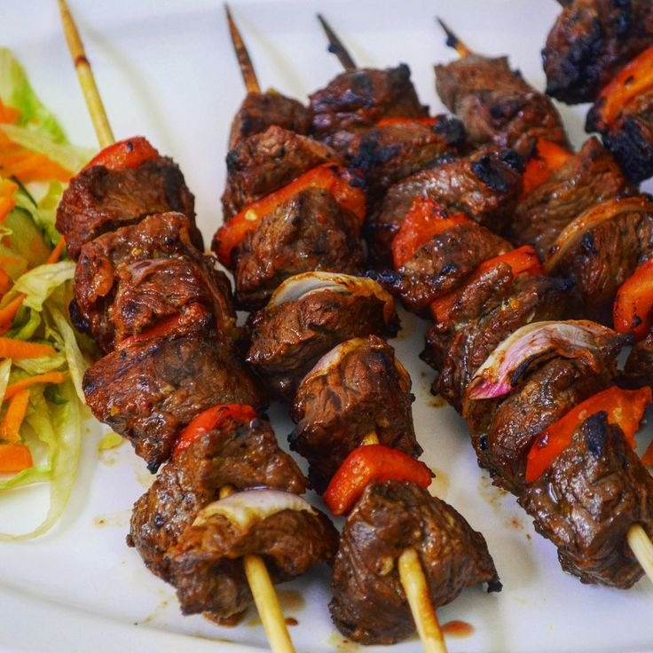
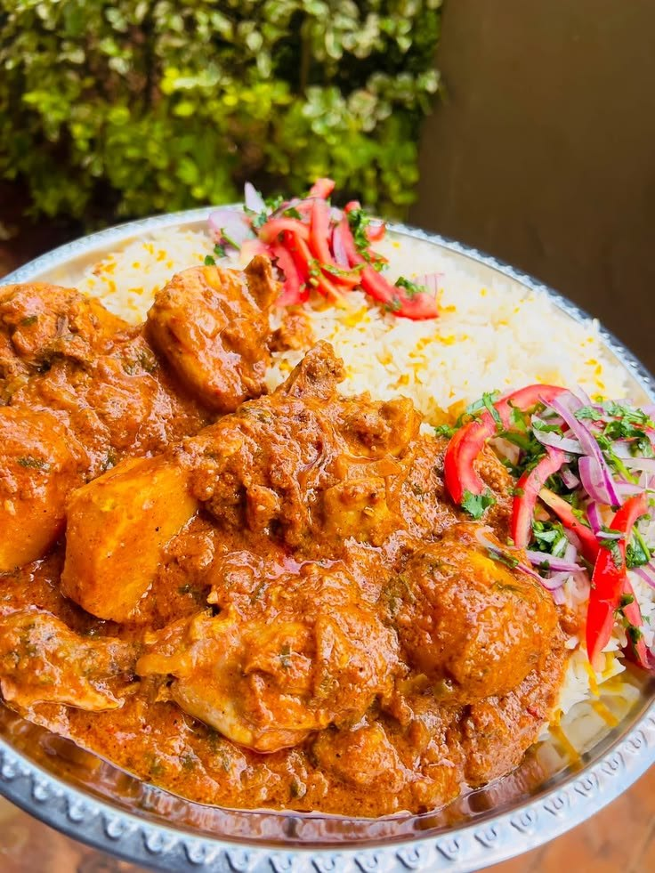
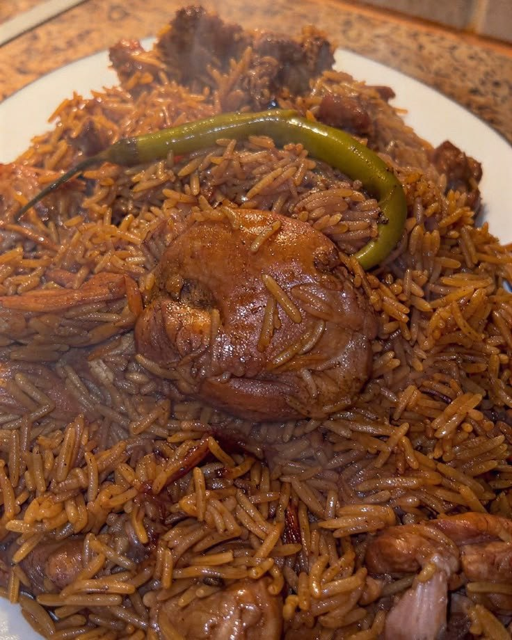
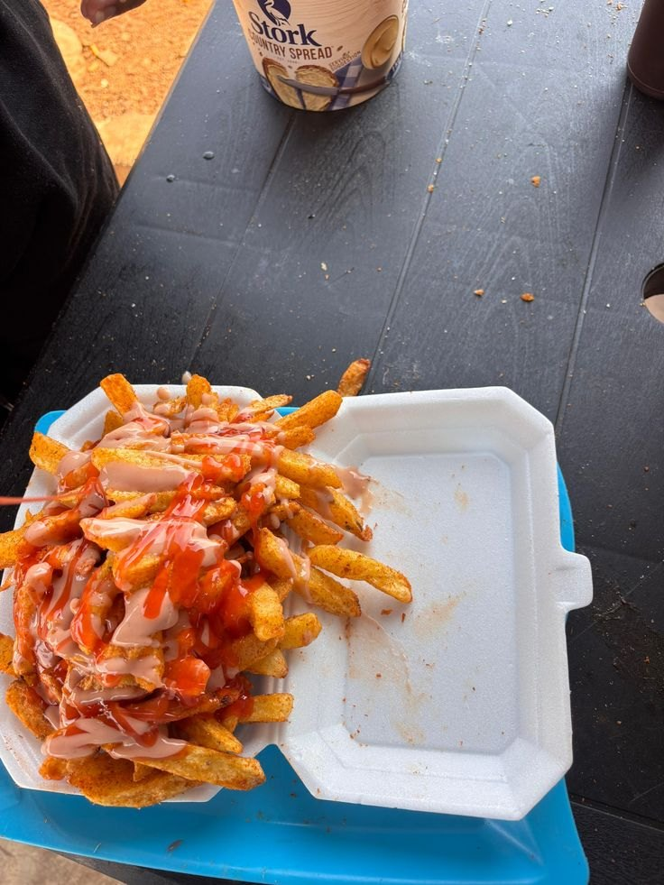

Swahili Foods Eger brings the warmth of coastal Kenyan cooking to Egerton and Nakuru. Every plate is prepared with fresh ingredients, patient marinades and spices ground the traditional way.
From a quick 1/2 shawarma between lectures to a full Sinia platter for the family, we cook it fresh and serve it with a smile.
Our StoryA taste of what we do best. Add to your order in one tap.
Whole flame-grilled chicken
KSh 700Sharing platter
KSh 400Loaded signature wrap
KSh 250Tangy masala chips
KSh 200Pick from shawarma, chips, pilau, grilled chicken and more.
Add meals, adjust quantities and see your subtotal instantly.
Enter your details and we open a ready-written message to us.
Once we acknowledge, we agree the delivery fee and payment with you.
Swahili cooking blends African, Arab and Indian influences into something truly unique: pilau scented with cardamom and cumin, chicken marinated in garlic, lemon and pili pili, and biryani layered slowly over low heat.
Chicken Biryani is served every Friday only, so it is always cooked fresh in small, careful batches.
Explore the Menu
A look at what’s cooking at Swahili Foods Eger.





Ingredients prepared fresh every morning. Nothing reheated, nothing rushed.
Chicken marinated and grilled to order for smoky, juicy flavour.
Generous portions from just KSh 50, built for students and families.
Order on WhatsApp and talk straight to the owner. Quick, personal, reliable.
| Tuesday – Sunday | 8:00 AM – 10:00 PM |
| Monday | CLOSED |
We are closed every Monday.
Customers arrange payment directly with the restaurant owner once the order is confirmed on WhatsApp.
We deliver within Egerton and Nakuru. Delivery has an additional fee which the owner confirms with you based on your location. Pickup is also available.
Biryani is cooked in careful, fresh batches every Friday, so it is only available to order that day.
Payment is arranged directly with the restaurant owner after your order is acknowledged on WhatsApp.
Sending the WhatsApp message is a request. Your order is confirmed once the restaurant acknowledges it.
We are open Tuesday to Sunday, 8AM to 10PM, and closed every Monday.
Words from the people who keep coming back.
The chicken pilau is the best I have had near campus. Fragrant, hot and the portions are generous.
Amina W.Egerton University studentOrdered a full grilled chicken for a family dinner. It arrived fast, juicy and full of flavour.
James K.NakuruFriday biryani is worth the wait every single week. And the special shawarma is unmatched.
Faith N.NjoroPick your favourites, send your order on WhatsApp and we’ll take it from there.
Order Now